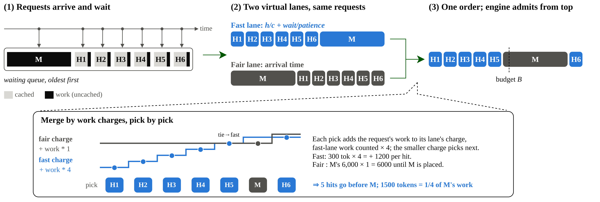
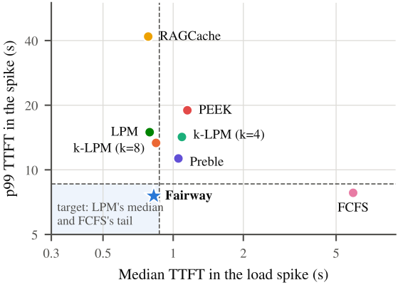

目录 · 8 节
1它到底在解决什么问题？2整体设计：同一个队列，两种排法，按计算量轮流取3快车道怎么打分？4为什么还需要公平车道？5实验：尖峰和洪峰下表现如何？6我认为它的局限7一个 RAG / agent 推理服务团队可以怎么试8结论与评价前缀缓存下的 prefill 排队，可以同时做到中位延迟低、长尾也短：队列短时优先跑命中多的便宜请求，一个请求等得越久（和它自己的 prefill 时长相比）就排得越靠前，同时限制便宜请求最多能插到最老请求前面多少计算量。这就是 Fairway 的做法，它是 vLLM 调度器里的一个钩子。agent 和 RAG 的请求常共用一段前缀，命中缓存的部分不用重算，同一队列里各请求剩下的计算量能差上百倍，先跑谁就决定了每个请求等多久才出第一个 token。在两条 SEC（美国证券交易委员会）财报问答动态请求记录各自的 60 秒流量尖峰里，Fairway 的中位首 token 延迟都是 0.82 秒，p99 是 7.6 和 8.4 秒，接近先来先服务；先来先服务的中位数涨到 5.1 到 5.9 秒，LPM（最长前缀优先）、RAGCache 等偏向命中的排法 p99 则到了 11 到 50 秒。
它到底在解决什么问题？
先看一个示意场景。一个金融问答服务，每个请求的提示里放着检索到的几份财报片段，再加上用户的问题。热门财报的片段大多已经在 KV cache 里，冷门财报的片段要从头算。于是同一时刻排队的请求，剩下要算的 token 数差别很大：
| 请求（示意） | 提示长度 | 已缓存 | 还要算 |
|---|---|---|---|
| H1：问热门财报 | 6,300 | 6,000 | 300 |
| H2：问热门财报 | 6,300 | 6,000 | 300 |
| M：问冷门财报，最早到 | 6,000 | 0 | 6,000 |
论文在 Mooncake 的真实 agent 请求记录里量过：多数请求只命中一部分，同一队列里各请求还要算的量相差约 100 倍。
这时有两种现成的排法，各有一个毛病。第一种是优先跑命中多的请求，SGLang 的最长前缀优先（LPM，已缓存前缀最长的先跑）就是这样。H1、H2 很快出结果，中位延迟最低。但如果热门请求源源不断地来，M 永远排不上。第二种是先来先服务，这是 vLLM 的默认做法。M 不会被饿死，可 H1、H2 只要算 300 个 token，却要干等 M 算完 6,000 个，中位延迟变高。
已有的折中办法给“优先命中”加了公平性，但公平的单位选错了。有的按轮次算，比如每几轮让最老的请求跑一次，可一轮可能是几十个 token，也可能是几千个。有的按绝对等待秒数加分，可同样等 2 秒，对一个只需 0.1 秒的请求是等了 20 倍，对一个需要 3 秒的请求还不到一次 prefill。公平应该拿请求自己的计算量来衡量，而不是数轮次或数秒，这是整篇论文的出发点。
整体设计：同一个队列，两种排法，按计算量轮流取

Fairway 是 vLLM 调度器里的一个钩子。每个调度步开始前，它把等待队列重新排一遍，引擎先接着跑已经在运行的请求，再按这个顺序、在这一步剩下的 token 预算内收新请求（实验里每步预算是 2,048，即 vLLM 在 48 GB 显卡上的默认值）。重排分三步：
| 步骤 | 输入 | 产出 |
|---|---|---|
| 快车道（Fast lane） | 每个请求的已缓存长度、未缓存长度、已等时间 | 按“复用比加相对等待”从高到低的顺序 |
| 公平车道（Fair lane） | 每个请求的到达时间 | 从最老到最新的顺序 |
| 合并 | 两条车道各自已经放进去的计算量 | 一条最终顺序 |
两条车道都是虚拟的：它们排的是同一批请求，只是排法不同。快车道负责让便宜的命中请求先走，公平车道负责给最老的请求兜底。下面拆开讲。
快车道怎么打分？
快车道给每个请求打一个分，分高的先走。分数由两项相加：
第一项是复用比。 是请求已缓存的前缀长度， 是还要算的 token 数，复用比表示每算 1 个 token 能顺带省下多少个。 至少按 1 算：完全命中的请求通常还剩问题本身几十个 token 要算；按 1 下限只是为了万一一个都不剩时不会除以 0。用上面的示意表，H1 的复用比是 6,000 除以 300，等于 20；M 是 0。为什么不直接按已缓存长度排？两个请求缓存一样多时，复用比会把要算得少的那个排前面。只看缓存长度，可能让一个很长的部分命中请求插到便宜的完全命中请求前面，拖慢后面所有人。 Hoot 说

只看缓存长度
- A 的分
- 6,000
- B 的分
- 6,000
- 结果
- 打平，B 可能先走
B 要算 3,000 个 token，后面所有人都跟着多等。
第一项：复用比 h ÷ c
- A
- 6,000 ÷ 300 = 20
- B
- 6,000 ÷ 3,000 = 2
- 结果
- A 先走
缓存一样多，要算得少的排前面。
第二项：等待 ÷ 耐心，都等了 2 秒
- 短请求，耐心 1 秒
- 2 ÷ 1 = 2
- 长请求，耐心约 4 秒
- 2 ÷ 4 = 0.5
- 结果
- 短请求先被提上来
队列短时这一项很小，排起队来才起作用。
数字示意：请求 A、B 都已缓存 6,000 个 token，A 还要算 300 个，B 还要算 3,000 个；等待那一栏沿用正文的示意，两个请求都等了 2 秒。
出处
论文方法部分的快车道打分公式 s = h/c + wait/SLO；数字为示意，6,000 与 300 沿用正文示意表。第二项是相对等待。 是请求已经等了多久， 是这个请求的耐心（这里只是调度时用的一个数，不是评测目标）：在空闲 GPU 上跑完它的 prefill 预计要多久，乘以 3，且不少于 1 秒。预计时长按提示总长度来估，估算表是每种 GPU 上跑一次短测得到的。这里故意用总长度、不用剩余计算量：总长度对一个请求是固定的，剩余计算量会随缓存变化，而且已经体现在第一项的复用比里了。一个请求等满自己的耐心时长，这一项就涨到 1，开始变急。对 prefill 超过三分之一秒的请求，耐心时长正好是它 prefill 时长的 3 倍。
为什么要除以自己的耐心？先跑短请求只让别人多等一点，先跑长请求会让别人多等很多。还是示意：短请求的耐心是 1 秒，长请求约 4 秒，两者都等了 2 秒，短请求的第二项是 2，长请求只有 0.5，短请求先被提上来。队列短时大家只等零点几秒，第二项很小，排序基本按复用比走。排起队来，第二项变大，等得久的请求逐步往前挪，整个过程不需要切换模式。
倍数为什么取 3？作者按 GPU 实测来定：取 3 时（不考虑 1 秒下限），一个等了自己 prefill 时长 3 倍的未命中请求，分数和一个刚到、一半提示已缓存的请求相同，两者都是 1。倍数更小，排序更接近先来先服务；更大，则更接近优先命中。
为什么还需要公平车道？
只靠相对等待，有一种情况仍然兜不住：大量高命中的请求一起涌进来。每个新来的请求复用比都很高，分数照样压过等了很久的未命中请求。所以 Fairway 还有第二条车道，纯按到达时间排，最老的在最前。
两条车道用计算量记账来合并，论文叫 work charge。每条车道有一个账本。账本一开始记上这条车道排在最前那个请求的计算量，之后每放一个请求，就再加上这个请求的计算量；快车道的计算量都按 4 倍记。每次由账本较小的那条车道放下一个请求。两条车道排的是同一批请求，一个请求被一条车道放过以后，另一条车道就跳过它。账本每个调度步都清零重来。

图里的例子可以手算。快车道账本起点是 300 乘 4，等于 1,200；公平车道起点是 M 的 6,000。快车道账本较小，放 H1，账本涨到 2,400。接着放 H2、H3、H4，账本到 6,000。两边相等时仍由快车道放，放 H5，账本到 7,200。这时公平车道账本更小，放 M。最后 5 个命中请求先走，它们一共只有 1,500 个 token，正好是 M 自己计算量的四分之一。一般情况下，排到最老请求前面的计算量最多是它自己的四分之一，再加上一个请求的超出量；例子里命中请求一样大，所以正好是四分之一。命中请求再多，能插到最老请求前面的计算量也是有限的。
排好的顺序怎么执行？引擎每步最多处理 2,048 个 token，一个请求放不下时可以分块做。图里这一步先做 5 个命中请求的 1,500 个 token，再做 M 的前 548 个；M 已经开跑，后面几步优先接着做完。
实验：尖峰和洪峰下表现如何？
实验在一张 A6000 上用 vLLM 跑 Llama-3.1-8B，模拟分离部署里的 prefill 节点。每个请求只生成 1 个 token，所以测到的就是排队加 prefill 的时间。KV cache 只放得下每份请求记录里可复用内容的四分之一到三分之一，淘汰很频繁。负载有 SEC（美国证券交易委员会）公开的季度财报问答、MuSiQue 多跳问答和 Mooncake 的真实 agent 记录。作者只用 SEC 上一个随机种子生成的记录调好三个参数（快车道权重 4、耐心倍数 3、耐心下限 1 秒）后冻结，再原样用到新种子、MuSiQue 和 Mooncake 上。
第一个实验看负载变化：先平稳一段，来一阵突发，再来一个超过处理能力的 60 秒尖峰。对比的基线里，RAGCache 按复用比排；Preble 按缓存比例把请求分组，各组轮流放行；PEEK（一种缓存感知调度器）按缓存省下的 prefill 排，并保护等待请求要用的缓存块不被淘汰。下面是两条 SEC 动态记录在尖峰窗口里的首 token 延迟，取自论文第 5.2 节：
| 排法 | 中位数（秒） | p99（秒） |
|---|---|---|
| 先来先服务 | 5.1–5.9 | 尾部保持较短 |
| Preble | 较低 | 11–12 |
| 最长前缀优先（LPM）与 k-LPM 8 | 较低 | 13–15 |
| PEEK | 较低 | 18–19 |
| RAGCache 的重排 | 较低 | 42–50 |
| Fairway | 0.82 | 7.6–8.4 |
这说明 Fairway 同时拿到了两种排法各自的长处：中位数像优先命中，尾部像先来先服务。作者给平稳、突发、尖峰三个阶段各定了两个目标：中位数最多比 LPM 高 10%，p99 最多比先来先服务高 10%，所以每份记录有 6 个目标。Fairway 在两份记录上都 6 个全达到，没有哪个基线超过 4 个。

第二个实验是 11 个场景的 p99 对比。最好的基线随场景变化：先来先服务赢 4 个，每 4 轮让最老请求跑一次的 k-LPM 赢 4 个，每 8 轮一次的赢 3 个。Fairway 在其中 10 个场景里，p99 比所有不饿死请求的基线中最好的那个低 2% 到 18%（“饿死”是论文的评测口径：最坏首 token 延迟超过自身 p99 的 3 倍），第 11 个打平。这说明不用为每种负载单独挑排法，一套参数就够。
第三个是洪峰压力测试：先积压一批未命中请求，再涌进来一大批高命中请求。LPM、PEEK（一种在优先命中之上加了公平考虑的调度器）和 RAGCache 让每个新来的便宜请求都插到积压请求前面，最惨的未命中请求等了 66 到 201 秒。Fairway 把它压在 22 秒，和先来先服务一样。代价是洪峰请求自己的中位延迟从 LPM 下的 1.6 秒涨到 18 秒，它们被推迟，但不会被饿死。
消融实验把相对等待换回绝对等待。请求长度差不多时，两者差别在 3% 以内；长度混杂时差别才出来。在 SEC 长文档问答上，短提示的 p99 从 13.6 秒降到 8.6 秒，代价是在混合长度的几个场景里，长提示的 p99 涨了 6% 到 31%。这说明相对等待的收益来自让短请求先走，最长的请求为此付了代价。
我认为它的局限
第一，持续过载、而且命中请求只比未命中便宜一点时，中位数会变差。在 MuSiQue 过载场景里，Fairway 的中位数是 3.0 秒，LPM 只有 0.9 秒，换来的 p99 是 12.6 秒，只比 LPM 的 14.2 秒好一点。
第二，实验规模偏小。全部结果来自一张 A6000 上的 8B 模型，每个请求只生成 1 个 token。作者按 GPU 能力等比设置负载和缓存大小，认为结论能推到大卡上，但更大的模型、多卡 prefill 实例，以及 prefill 和 decode 跑在同一台机器上的部署都没有测。
第三，公平车道的保护只在一步之内生效。最老请求前面最多插入它自己四分之一的计算量，再加一个请求的超出量；只有这一步剩下的预算和显存都够时，它才会在这一步开跑。按 4 乘 2,048 粗算，这种保护大约覆盖未缓存部分 8k token 以内的最老请求。更长的请求只能靠相对等待：它等得越久分数越高，而新来的请求分数只比复用比多一点，它最终会升到快车道最前面。作者的实验里提示最长 16k token，按上面的评测口径没有请求被饿死，Fairway 的最坏等待不超过自身 p99 的 2.3 倍。
一个 RAG / agent 推理服务团队可以怎么试
- 先量自己的队列。从推理服务日志里拿每个请求的已缓存长度和未缓存长度，看同一时刻排队请求的计算量差多少倍。差别只有几倍时，排法影响不大，不必动。
- 只加相对等待。在现有的优先命中排法上加一项“已等时间除以耐心”，耐心取预计 prefill 时长的 3 倍、下限 1 秒。看突发时的 p99 和最长等待是否下降，中位数是否不变。注意论文表 2：不加公平车道、只用相对等待时，长提示的 p99 和洪峰下的最长等待都比用绝对等待差（20.2 秒对 15.1 秒，59 秒对 33 秒），所以要同时盯住长请求的尾部。
- 再加公平车道。如果业务里有热门文档带来的洪峰，加上按到达时间排的第二条车道和 4 倍记账，重点看积压请求的最长等待。
- 用尖峰回放验收。把线上一次真实流量尖峰按原时间回放，同时看中位数和 p99 两个目标，不只看平均值。
结论与评价
最关键的启发是：前缀缓存让每个请求的真实成本差上百倍以后，排队公平必须按这个真实成本来算，按轮次或秒数算都会在某类负载上失效。
| 维度 | 评价 |
|---|---|
| 问题重要性 | 高。RAG 和 agent 请求普遍共用前缀，尖峰时的尾延迟直接影响体验 |
| 方法创新性 | 中。复用比和到达顺序都是已有排法，新意在用计算量记账把两者合并、用相对等待衡量急迫度 |
| 实验证据 | 中。7 个基线、11 个场景，加洪峰和消融，但只有单卡 8B 模型 |
| 工程成本 | 低。只是调度器里的一个钩子，重排一次队列在中位队列长度下只要 0.02 毫秒 |
| 是否值得尝试 | 值得。用了前缀缓存、又有突发流量的服务可以试；只加相对等待会拖长长请求的尾部，最好和公平车道一起上 |
读完这篇，你觉得
夜读鸮记下了，谢谢你的反馈。
点一下即可，无需登录；再点一次撤回。只统计匿名次数，不记录你是谁。
相关论文RELATED
 Infra · 2026-07-22C 2 KV: Compressed and Composable KV Cache Reuse for Efficient LLM Inference检索增强生成要把多篇检索到的文档拼进上下文，每次都从头算这些文档的 KV 缓存很贵，于是有方法把每篇文档的 KV 缓存存起来、用时直接拼接。但长文档的 KV 缓存很大，存储和读取本身成了瓶颈，直接压缩后再拼接，准确率又会明显下降。上海交大和阿里巴巴的这篇论文提出 C2KV，在冻结的原模型旁加一个轻量提取器：把几个可学习的压缩 token 接在文档后面一起读，只留下这几个 token 的 KV 当作这篇文档的缓存。缓存存的时候不带位置，拼接时再按新位置补上位置编码，所以能像积木一样任意组合。在长上下文下，推理最多快 17 倍，生成质量基本不变。
Infra · 2026-07-22C 2 KV: Compressed and Composable KV Cache Reuse for Efficient LLM Inference检索增强生成要把多篇检索到的文档拼进上下文，每次都从头算这些文档的 KV 缓存很贵，于是有方法把每篇文档的 KV 缓存存起来、用时直接拼接。但长文档的 KV 缓存很大，存储和读取本身成了瓶颈，直接压缩后再拼接，准确率又会明显下降。上海交大和阿里巴巴的这篇论文提出 C2KV，在冻结的原模型旁加一个轻量提取器：把几个可学习的压缩 token 接在文档后面一起读，只留下这几个 token 的 KV 当作这篇文档的缓存。缓存存的时候不带位置，拼接时再按新位置补上位置编码，所以能像积木一样任意组合。在长上下文下，推理最多快 17 倍，生成质量基本不变。 Infra · 2026-10-28HiLO: Towards Product-Level Graceful Degradation with a Quality-Aware, Load-Aware Control Framework流量尖峰时每个服务各自降级，单个服务活下来了，整个产品效果却可能崩掉。微软的 HiLO 把降级从服务级提到产品级：事先定好几个经过验证的产品状态，每个状态规定每个服务降到哪一档，比如关掉某些特征、减少扇出或换更便宜的模型；运行时各服务上报负载，中央控制器据此选一个状态下发。降级的单位应该是产品，而不是服务。上线后经历了 9 次真实流量冲击。最高一次到基线峰值的 2.38 倍，Bing 的相关性指标 OneDCG（一种归一化排序质量分）最多只掉 0.425 个点，没有越过 0.5 个点的运营红线。
Infra · 2026-10-28HiLO: Towards Product-Level Graceful Degradation with a Quality-Aware, Load-Aware Control Framework流量尖峰时每个服务各自降级，单个服务活下来了，整个产品效果却可能崩掉。微软的 HiLO 把降级从服务级提到产品级：事先定好几个经过验证的产品状态，每个状态规定每个服务降到哪一档，比如关掉某些特征、减少扇出或换更便宜的模型；运行时各服务上报负载，中央控制器据此选一个状态下发。降级的单位应该是产品，而不是服务。上线后经历了 9 次真实流量冲击。最高一次到基线峰值的 2.38 倍，Bing 的相关性指标 OneDCG（一种归一化排序质量分）最多只掉 0.425 个点，没有越过 0.5 个点的运营红线。 Infra · 2026-11-03LEAP: Efficient LLM Inference Scheduling with Generalizable Length Prediction让短请求先跑能明显降低平均延迟，前提是提前知道每个请求大概要生成多长，而现有的长度预测器换个领域排序就会变差，本身还要占 GPU。LEAP 发现，服务模型做 prefill 时算出的隐藏状态里已经带着输出长度的信号，在一层隐藏状态上接一个线性层就能读出来，不用另跑一个编码器。这个线性层放在 CPU 上算，和 GPU 上剩下的 prefill 同时进行，不占 GPU。每个请求结束后，LEAP 用递推最小二乘法拿这条请求的真实长度按公式直接修正线性层权重，不用算梯度，也不用回放旧数据。在 ShareGPT 流量的单卡实验里，平均每个 token 的延迟比几种现有预测器低 15.9% 到 40.8%。长度预测好不好，要看调度后的延迟和预测本身的成本。
Infra · 2026-11-03LEAP: Efficient LLM Inference Scheduling with Generalizable Length Prediction让短请求先跑能明显降低平均延迟，前提是提前知道每个请求大概要生成多长，而现有的长度预测器换个领域排序就会变差，本身还要占 GPU。LEAP 发现，服务模型做 prefill 时算出的隐藏状态里已经带着输出长度的信号，在一层隐藏状态上接一个线性层就能读出来，不用另跑一个编码器。这个线性层放在 CPU 上算，和 GPU 上剩下的 prefill 同时进行，不占 GPU。每个请求结束后，LEAP 用递推最小二乘法拿这条请求的真实长度按公式直接修正线性层权重，不用算梯度，也不用回放旧数据。在 ShareGPT 流量的单卡实验里，平均每个 token 的延迟比几种现有预测器低 15.9% 到 40.8%。长度预测好不好，要看调度后的延迟和预测本身的成本。 Infra · 2026-11-02ConfluxServe: Reconciling Resource Utilization and Parallelism Efficiency across Prefill and Decode in LLM Serving大模型服务里，prefill 和 decode 放在一起跑能互补资源，前者吃算力，后者吃显存带宽，但两者想要的并行方式不一样。长 prompt 的 prefill 要铺到更多卡上才能按时出首 token，decode 几张卡就够。ConfluxServe 按算子分开处理。线性层里，两阶段的 token 拼成一个批，用同一份权重切分一起算。到注意力层再分开，decode 留在本组卡上算，prefill 通过两次 All-to-All 分到更多卡上并行算，两条路径同时跑，算完再拼回一个批。在线上负载上，它在延迟约束内能承受的请求量比最强基线高 1.26 到 1.62 倍。
Infra · 2026-11-02ConfluxServe: Reconciling Resource Utilization and Parallelism Efficiency across Prefill and Decode in LLM Serving大模型服务里，prefill 和 decode 放在一起跑能互补资源，前者吃算力，后者吃显存带宽，但两者想要的并行方式不一样。长 prompt 的 prefill 要铺到更多卡上才能按时出首 token，decode 几张卡就够。ConfluxServe 按算子分开处理。线性层里，两阶段的 token 拼成一个批，用同一份权重切分一起算。到注意力层再分开，decode 留在本组卡上算，prefill 通过两次 All-to-All 分到更多卡上并行算，两条路径同时跑，算完再拼回一个批。在线上负载上，它在延迟约束内能承受的请求量比最强基线高 1.26 到 1.62 倍。
讨论
欢迎补充实验细节、复现经验或不同看法。需 GitHub 登录。
正在加载讨论…